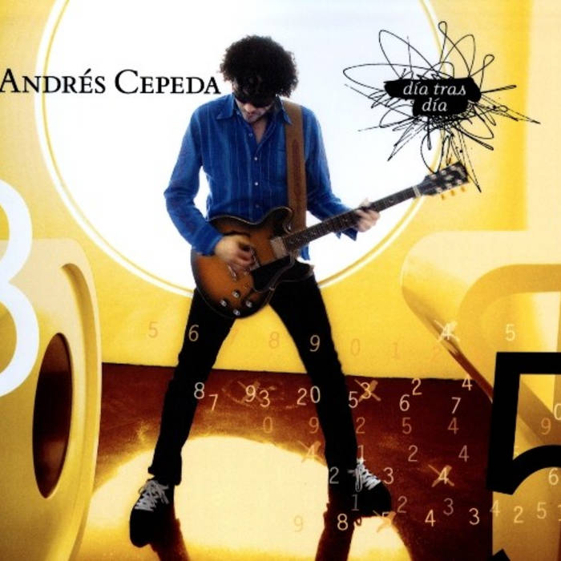
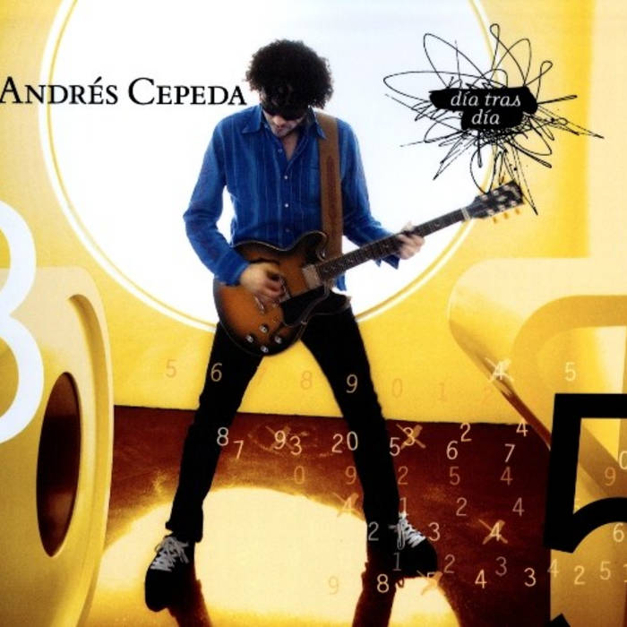

Andrés Cepeda
Andrés Cepeda Cediel es un reconocido cantante, compositor y músico colombiano. Nació el 7 de julio de 1973 en Bogotá, Colombia. Es conocido por su talento en géneros como el pop latino, la balada y la música romántica. Inició su carrera en 1989 con el grupo poligamia, su primera producción como solista fue en 1999
Discografia
- El Carpintero - 2001
- Siempre Queda Una Canción-2002
- Canción Rota - 2003
- Para Amarte Mejor - 2007
- Se Morir - 2000
- Día Tras Día - 2009
- Vivo En Directo - 2012
- Banda Sonora - 2012
- Lo Mejor Que Hay En Mi Vida - 2012
- Basado En Una Historia Real - 2014
- Vivo en Directo Dos - 2014
- Mil Ciudades - 2015
- Te Voy A Amar - 2020
- Compadres - 2020
- Magia - 2020
 

Top Cinco Canciones Más Populares
- Magia (Feat.Sebastián Yatra)
- Déjame Ir
- Besos Usados
- Lo Mejor Que Hay En Mi Vida
- Te Voy A Amar